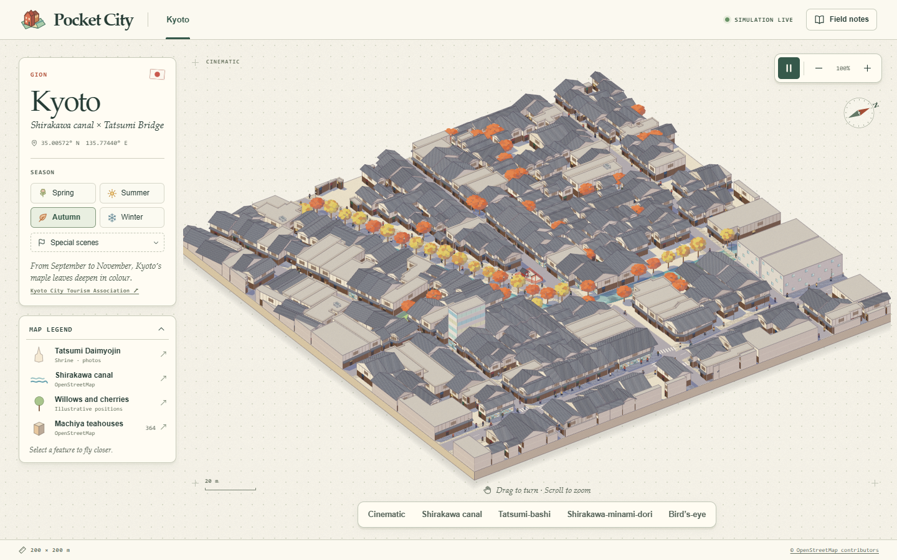
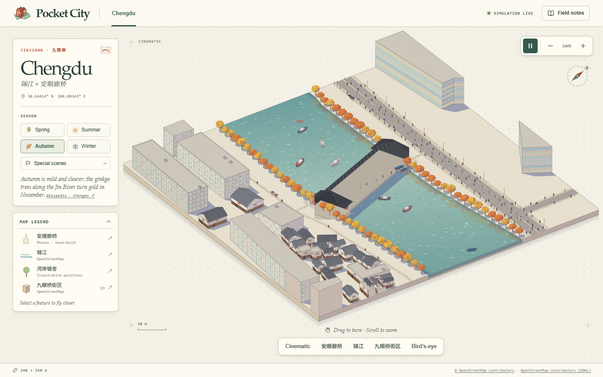

3D 微缩街景 Pocket City
用 OpenStreetMap 的真实建筑轮廓与道路，生成可交互的手绘微缩街区，支持春夏秋冬切换。

京都 · 祇园
白川运河旁的 364 栋町屋、辰巳神社与小桥，秋季红叶与冬季积雪。
进入 3D 街景 →

成都 · 安顺廊桥
锦江之上的安顺廊桥（手工地标），灰瓦红柱与河岸银杏，33 栋街区建筑。
进入 3D 街景 →
数据 © OpenStreetMap 贡献者。建筑高度在缺乏层数信息时按面积推算，属风格化近似，非测绘级还原。单文件离线运行，无需联网。